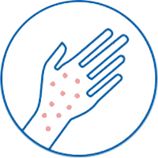
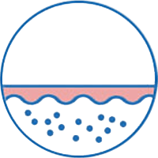
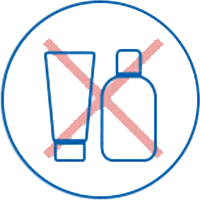

輕度的皮膚反應如
冒痘或出現疹粒
專業分享
研究報告*指出，目前還未有實際驗證如何區分敏感肌膚或非敏感肌膚的皮膚細胞分別，但我們仍 可以透過一些合理因素解釋敏感肌成因：
其中一項是皮膚的屏障功能失效，當屏障功能不可以正常運作時，水分便不能被鎖緊以致流失，容易導致皮膚乾燥或敏感等等問題。亦會因為接觸某些化學物質或於長時間暴露在極端的天氣條件下，皮膚因此受到損害。另外，正值更年期的婦女也容易受到敏感肌膚問題的困擾。
許多人都認為可以自我診斷自己是否患有敏感肌膚，但最好的解決方法是尋求專業皮膚科醫生為你作出正確的分析及診斷，有效地找出潛在的其他皮膚問題。以下幾點為敏感肌膚的特徵：


皮膚持續泛紅
經常因乾燥而抓癢

使用化妝品、護膚品或
清潔劑後皮膚出現反應
清潔劑後皮膚出現反應
*Glacomoni, P., Maes, D., Mammone, T., Marenus, K., Muizzuddin, N., Pelle, E. and Sparacio, R. 2001. Sensitive Skin and Moisturization. In. James J. Leyden & Anthony V. Rawlings. ed. Skin Moisturization. Cosmetic Science and Technology Series, v.25. New York: Marcel Dekker, chp. 7, pp. 145-155